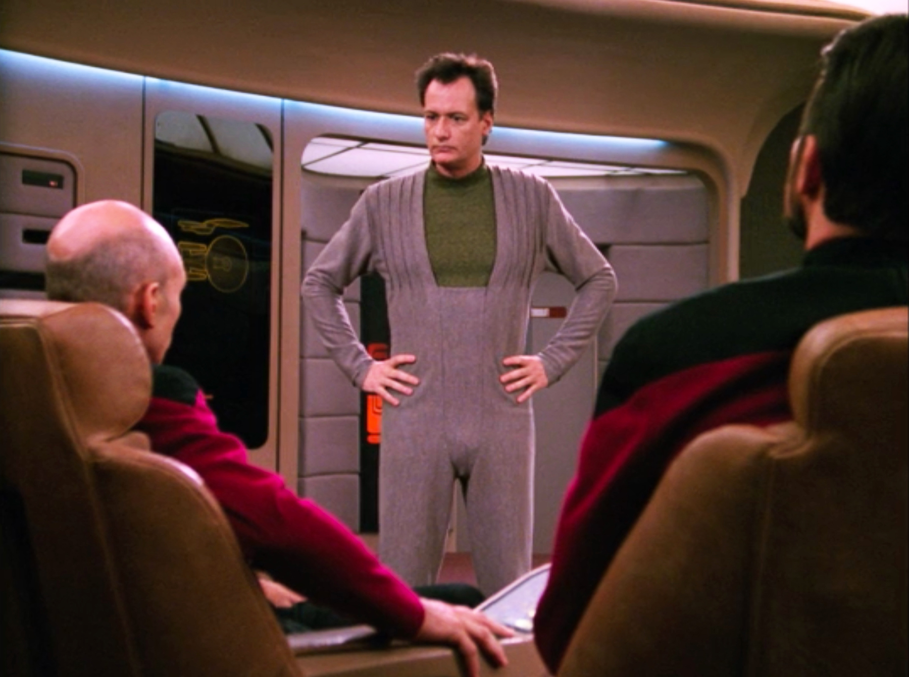

In the year 2366 I became human. It was only for a day, but it was dreadful. I wouldn't wish it on my worst enemy.
What is an omnipotent being supposed to do when it loses it's omnipotence? Run? Hide? Die? Surely not. But I did go look for help. Picard would help me.
They were not pleased to see me. Even worse, they didn't believe me. Fools! When have I lied to them? How could they not trust me?!

Locked away...like a criminal. But not for long. See, even though I may not have my powers I still have an IQ of 2005.
Some moon is crashing into some planet...blah, blah...boring. Just change the gravitational constant of the universe. Simple. Fixed. Done.

Stay away from this creature. She is dangerous. Stabbed me with a fork. Evil.

They found me...I don't know how but they found me. RUN FOR IT!
Something had to be done here. If I stay, the Calamarians will destroy the ship to get to me. If I leave, they will get me....time to go

Out in the shuttle, all alone. Until who pops in? It's Q! That bastard, he's the one who got me kicked out in the first place. But what's this? I'm back? I'll show them!

Back in control, I am. Moon fixed. Threat eliminated. Data Laughing. All is well again. Until Sherwood.....